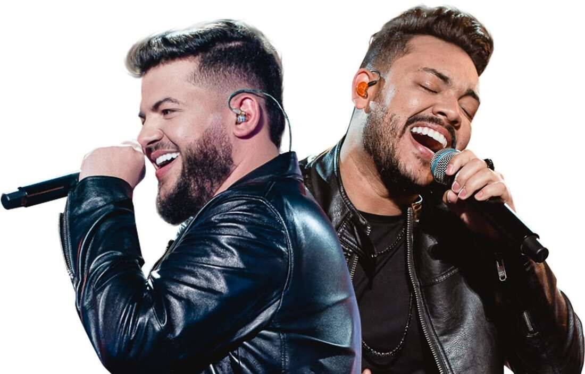

Ana Castela
A artista Ana Castela é uma das atrações da FEAPI 2023. Com os hits "Não, não vou" e "Não, nao vou (remix)", a cantora promete agitar a galera.
Alok
o Dj Alok é outra das varias atrações que se apresentarão na FEAPI 2023. o show do Dj promete, segundo a organizção da festa, o evento contara com Drones, lasers, fogos, palco 360° em formato de pirâmide, mix de música eletrônica com samba.
Ícaro e Gilmar

A dupla Ícaro e Gilmar vão cantar na festa do peão em Itapeva na noite do dia 23 de setembro.